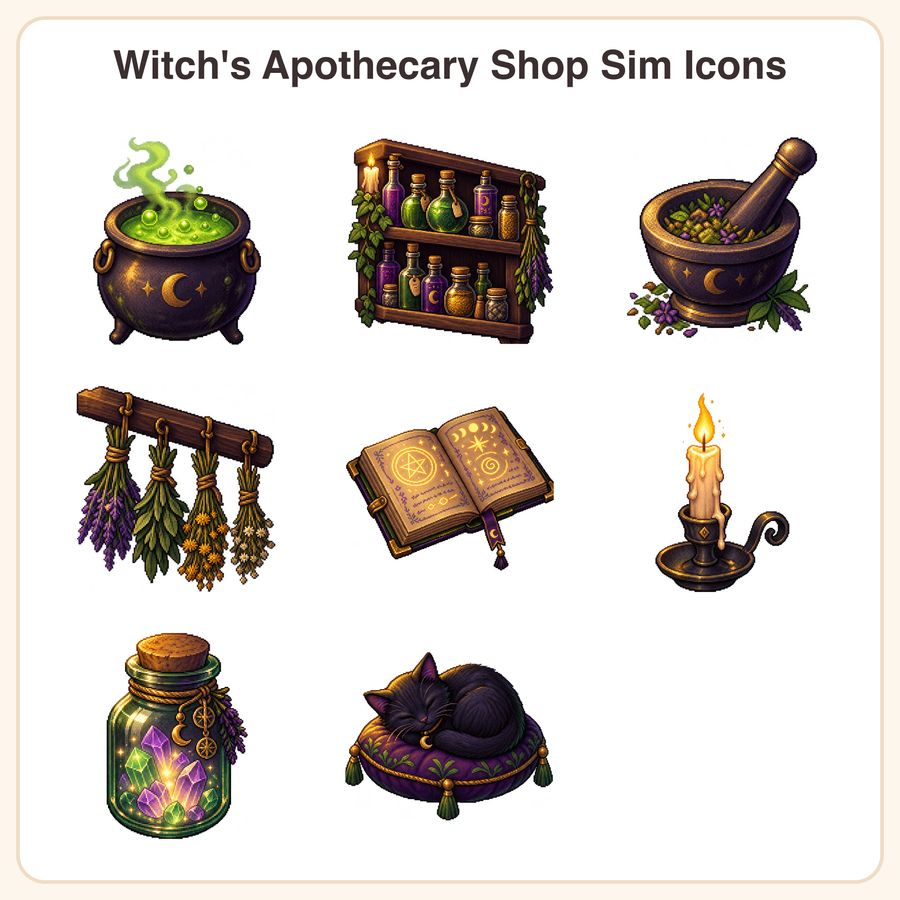

$6.99
Buy nowGet it on itch.ioView on EtsyBrew up a cozy witch shop sim without commissioning custom art — this hand-painted pixel icon pack gives your game instant charm. ✨ What's included (8 icons): • Bubbling cauldron with glowing green potion • Wooden shelf lined with labeled potion bottles • Mortar and pestle with crushed herbs • Bundles of dried herbs hanging from a rafter • Open spellbook with glowing runes • Flickering taper candle in an iron holder • Glass jar filled with glowing crystals • Black cat familiar curled on a cushion 📁 File formats & sizes: • 8 1024px transparent PNGs files • 8 crisp 512x512px PNG files (transparent background) • Organized, clearly labeled folders for easy import into Unity, Godot, GameMaker, or your engine of choice 🕯️ How to use: Drop the PNGs straight into your game UI, inventory screens, or shop menus, or resize the PNG to fit any resolution without losing quality. Great for cozy sims, shopkeeper games, crafting mechanics, or decor items. 📜 License: Personal and small-business commercial use permitted in up to 500 finished game copies/units. Redistribution or resale of the raw asset files themselves (as-is or in a competing asset pack) is not allowed. 🤖 Honest note: These designs were created in our shop with the help of AI-assisted tools, then hand-refined for palette, shading, and consistency across the set. Questions before you buy? Just message us — happy to help you find the right assets for your cozy game!